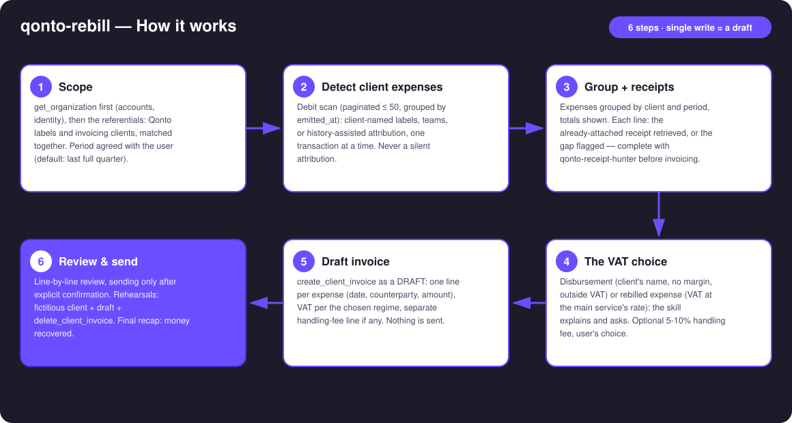
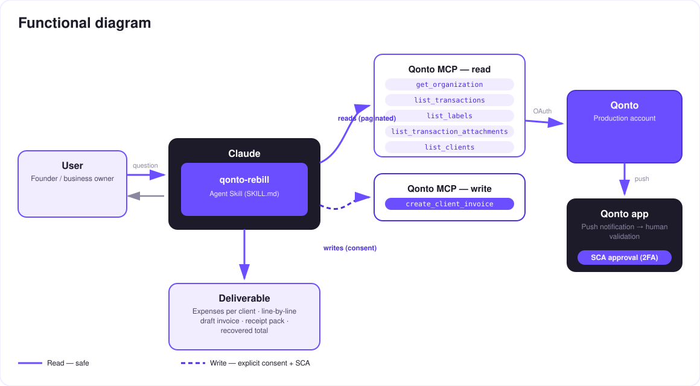

The expenses you advanced for clients, literally recovered — a line-by-line rebill invoice, receipts inventoried.
Freelancers and agencies advance money for their clients — plugins, stock photos, hosting, travel, mission meals — and forget to rebill half of it. The skill goes and gets that money back:
Client-named Qonto labels, teams, or history-assisted attribution — one transaction at a time, never silently.
Expenses grouped per client and period, with the receipts already attached inventoried — gaps flagged per line.
Disbursement (outside VAT) vs rebilled expense (VAT at the main service's rate): the skill compares and asks — it never decides alone.
One line per expense, optional 5-10% handling fee — sent only after explicit confirmation.
Would someone use this on a Monday morning? It's the end-of-quarter ritual that pays for itself the first time it runs.
| Prerequisite | Detail | Required |
|---|---|---|
| Qonto production account | Adapts to any organization — get_organization first, nothing hardcoded | ✅ |
| Country | Universal mechanics (find → group → draft). The disbursement regime is French law (art. 267 II-2° CGI): outside France, local VAT treatment is deferred to a local accountant | ℹ️ detected |
| Qonto MCP connected | Official connector (claude.ai / Claude Desktop), OAuth login | ✅ |
| Client-named labels | Qonto labels named after clients (or teams per mission). No labels: interactive attribution, one transaction at a time | ⭕ recommended |
| Clients in Qonto invoicing | list_clients — the invoice needs an existing client; otherwise the skill explains how to create one | ⭕ |
| Receipts attached | Inventoried automatically; for the gaps: qonto-receipt-hunter before rebilling | ⭕ |

emitted_at, not settled_at (settlement lands 1-2 days later)qonto-receipt-hunter before sendingget_organization always first (bank_account_id required by list_transactions)
One write, and it's a draft: reads are risk-free; the write (create_client_invoice) only produces a draft inside Qonto. Sending it to the client requires explicit confirmation in the conversation. Since MCP-created invoices are real, rehearsals run on a fictitious client and end with delete_client_invoice.
| Criterion | Disbursement (débours, art. 267 II-2° CGI) | Rebilled expense (standard) |
|---|---|---|
| Principle | Paid in the client's name and on their behalf (mandate) | Paid in your own name, recharged as part of your price |
| Margin | Forbidden — exact amount, euro for euro | Allowed (handling fee 5-10%…) |
| VAT | Outside VAT scope: no VAT on the line, input VAT not deductible | VAT at the main service's rate (often 20%) — even if the underlying cost was 10% or VAT-free |
| Receipt | Original invoice in the client's name, handed over | Original invoice in your name, kept in your books |
| Books | Third-party account (not revenue) | Revenue |
| Country | French regime | Universal mechanics; outside France → local accountant |
The skill explains and asks — it never picks a regime on its own (per line when regimes are mixed), and every report recommends accountant validation.
| Output | Format | When |
|---|---|---|
| Conversation reply | Markdown tables: expenses per client (receipt ✅/⚠️), invoice line by line, recovered total | Always — the baseline |
| Draft invoice in Qonto | create_client_invoice as a draft, visible in Invoicing | After the regime is agreed; sent only on explicit confirmation |
| Receipt pack | Download links (get_attachment, time-limited) to forward with the invoice | Every prepared invoice |
| HTML recap | Per-client cards, receipts gauge, recovered amounts | When the host renders files (claude.ai artifacts, Claude Desktop, Claude Code); fallback to tables |
The ≤ 3-minute demo attached to the PR walks through: the problem (advanced expenses everyone forgets) → detection through labels → the VAT choice explained → the draft invoice, line by line, receipts inventoried → confirmed send and recap. Example figures shown in the docs are invented.
| Idea | Effort | Note |
|---|---|---|
| Learning "rebillable" counterparties per client | Medium | Accepted attributions pre-fill the next quarter |
Pre-approval quotes (create_quote) for large advances | Low | The client signs off before you pay |
| A scheduled monthly/quarterly ritual | Low | "Anything to rebill this month?" on autopilot |
Chaining qonto-receipt-hunter → qonto-rebill → qonto-invoice-chaser | Low | Complete receipts → invoice → payment chasing |
| Multi-currency expenses | Medium | Converted at transaction rate, disclosed per line |
delete_client_invoice